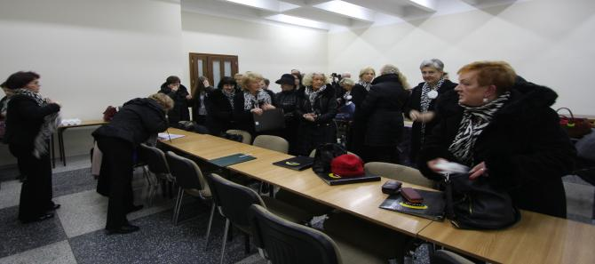
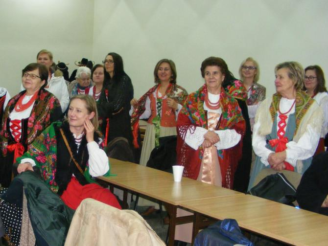
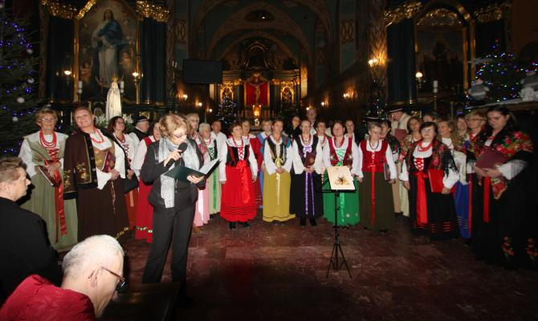
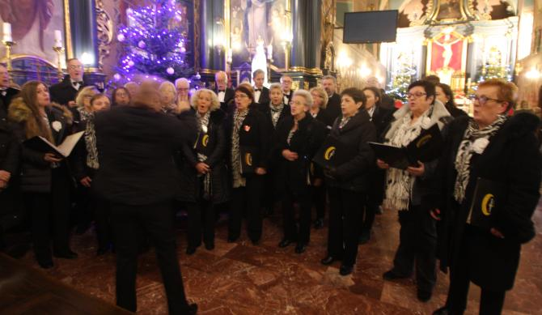
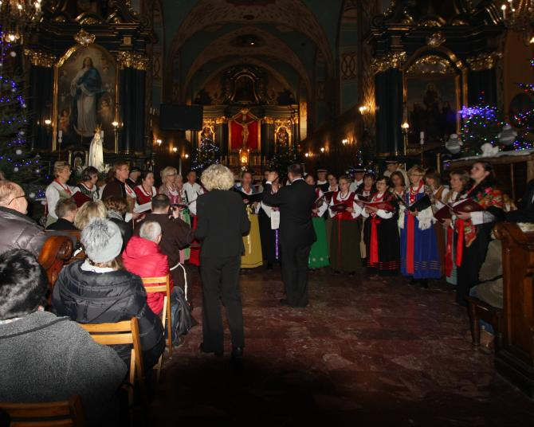
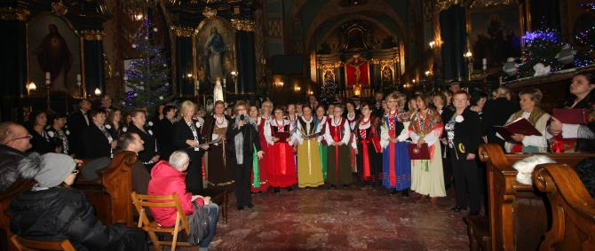
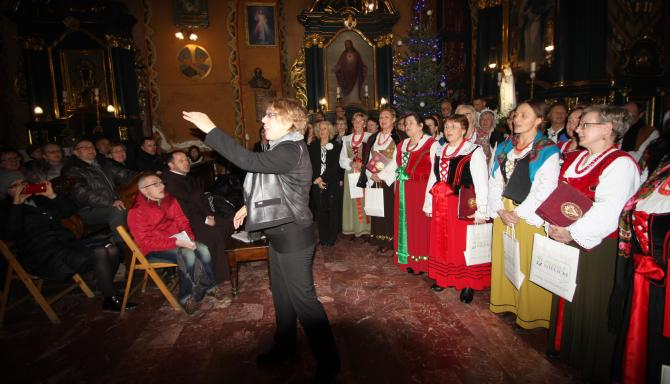
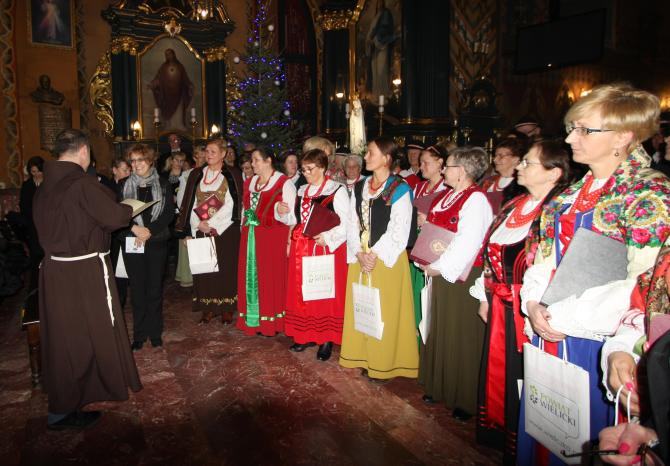
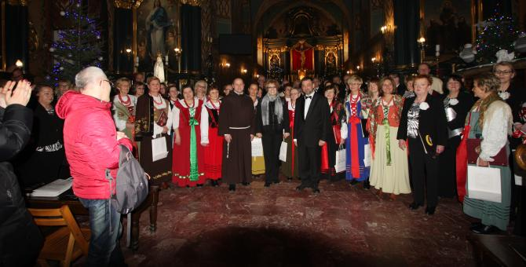
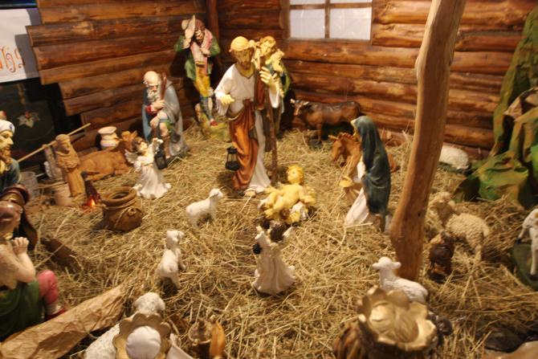

A tymczasem w Cameracie...
.
2018-01-14
Pomysł na Wielicki Wieczór Kolęd zrodził się w 2006 r. po wspólnym kolędowaniu w kościele OO. Franciszkanów-Reformatów w Wieliczce. Widząc jak wielkim zainteresowaniem cieszyło się to wydarzenie Stowarzyszenie Muzyczne - Chór Camerata, działające pod patronatem Centrum Kultury i Turystyki w Wieliczce, postanowiło stworzyć imprezę cykliczną. I tak od 2007 r. każdego roku w styczniu, Camerata pod dyr. Izabeli Szoty, organizuje Wielicki Wieczór Kolęd, w którym również bierze czynny udział. Wspólne kolędowanie odbywa się w rocznicę powstania chóru, który rozpoczął swoją działalność w styczniu 1997 r.Dzisiaj jako gospodarze koncertu spotykamy się wcześniej, aby przyjąć naszych gości.
 
W tegorocznym XII WWK wystąpił chór "Echo Gorczańskie" z Nowego Targu pod dyr. Piotra Augustyna z tradycyjnymi kolędami i pastorałkami góralskimi.
Chór powstał w 1958 r. przy Parafii Najświętszego Serca Pana Jezusa w Nowym Targu. Jego założycielem był organista Józef Grzybek. Obecnie chór prowadzi Piotr Augustyn.

Koncert rozpoczął nasz chór krótkim występem.

Następnie koncert kolęd dali nasi goście.

Na zakończenie zaśpiewaliśmy wspólnie.

I tradycyjnie ze wszystkimi w kościele "Bóg się rodzi"

Teraz podziękowania

i wspólne zdjęcia.

Zapraszamy wszystkich za rok.


© Stowarzyszenie Muzyczne Chór Camerata Wieliczka
Projekt i wykonanie:  Prowadzenie strony oraz zdjęcia: Małgorzata Wysocka-Cebula
Prowadzenie strony oraz zdjęcia: Małgorzata Wysocka-Cebula